Templates
Create custom templates
for different Slack channels.

Linear Asks
Linear Asks is the easiest way to create and manage workplace requests.
Streamline bug reports, feature ideas, IT tickets, HR requests, and more.
Linear Asks is a new take on intake. Submit requests directly
from Slack and automatically send them to the relevant team in
Linear. Eliminate cluttered channels and reduce context switching.
Slack
Let everyone in your Slack workspace turn their requests into
Linear issues — even if they don’t have a Linear account.
Create custom templates
for different Slack channels.
Create private Asks via
DM for sensitive requests.
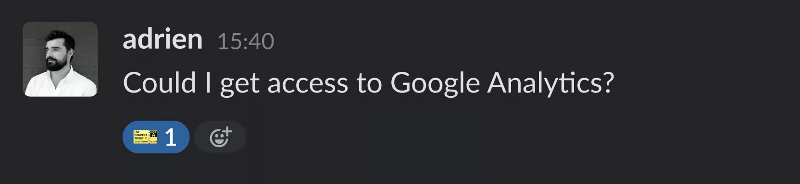
Turn any message into an
Ask simply by using an emoji.

Get notified about comments and
status updates directly in Slack.
Linear
Review, prioritize, assign, and update each
issue without ever switching back to Slack.

Reply to Asks directly from Linear.
Manage incoming
requests from a
shared team inbox.
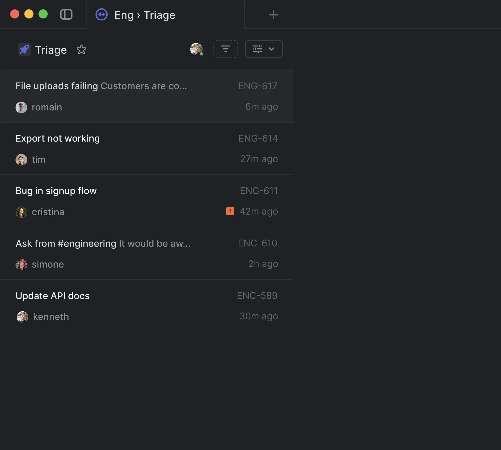
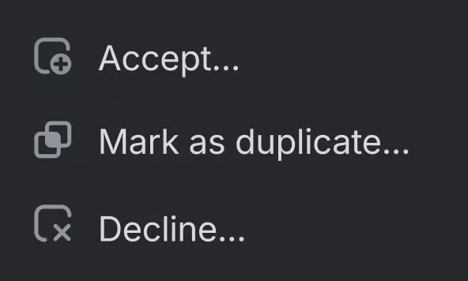
Fly through your requests with
rapid-fire keyboard commands.

Control who has access to
sensitive requests.
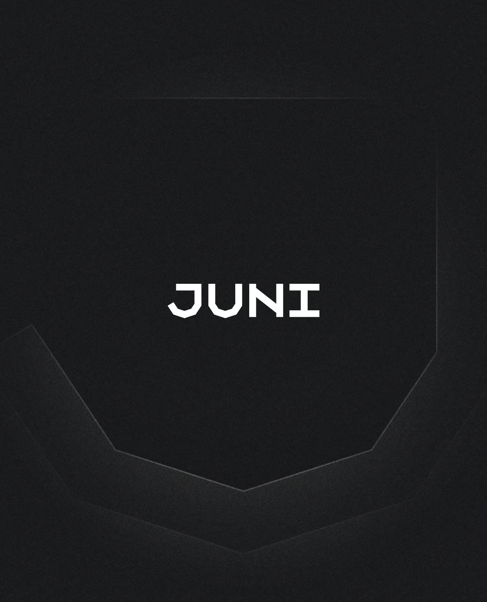
“With Linear Asks we can centralize
all internal request workflows across
hundreds of employees including
legal, IT, and customer support.”
Workflows
Advanced features like SLAs, Triage, and Linear Insights
unlock new levels of control over your request workflows.
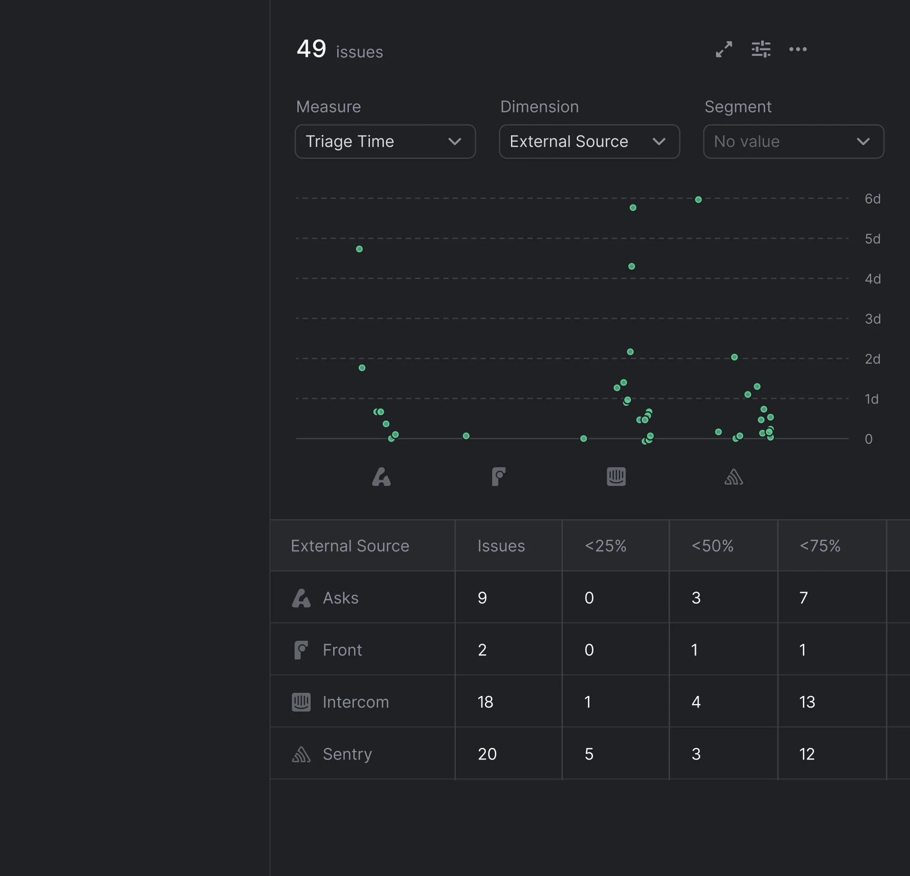
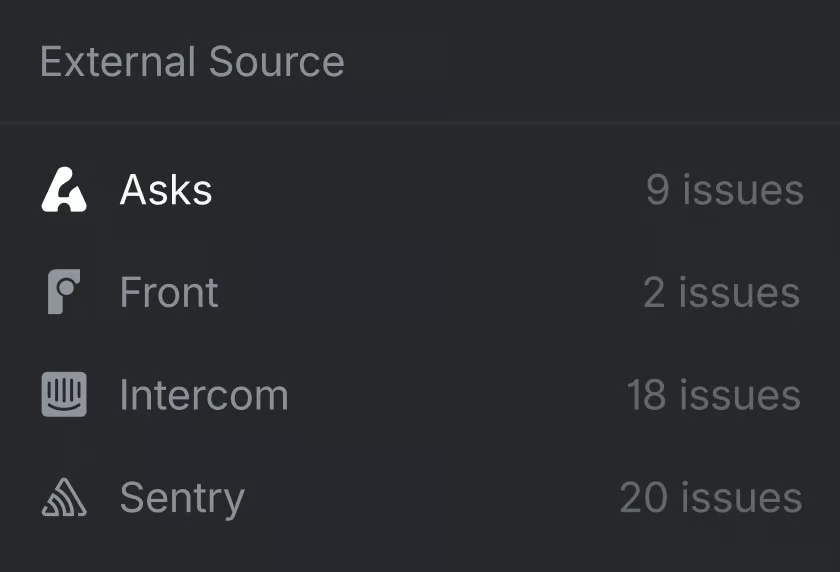
See trends around
response time, workload,
and other reports.
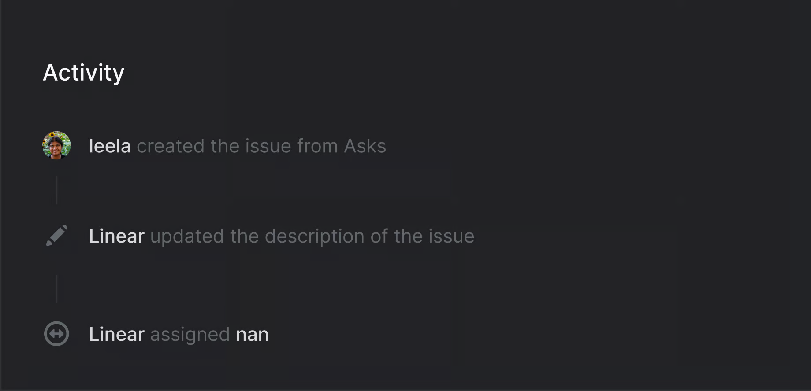
Automatically assign or
notify team members.
Apply SLAs to time-sensitive
Asks to communicate urgency.
Linear Asks supports all types of workplace requests.
From engineering and design to IT, legal, and HR.
Enable people outside of
engineering to quickly file
bug reports without worrying
about complex issue details.
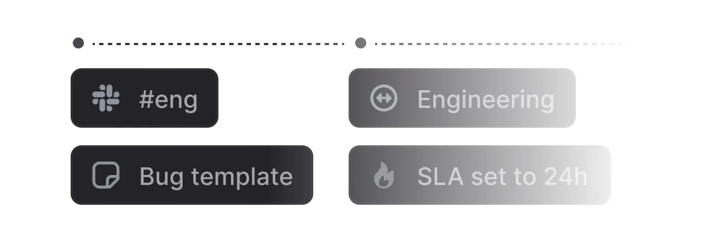
Configure templates with concrete
instructions, placeholders, and
checkboxes to standardize
and streamline intake.
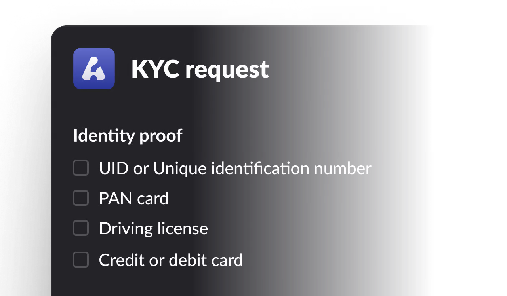
Turn any message in your #ask-
IT channel into an IT ticket
by reacting with a 🎫 emoji.
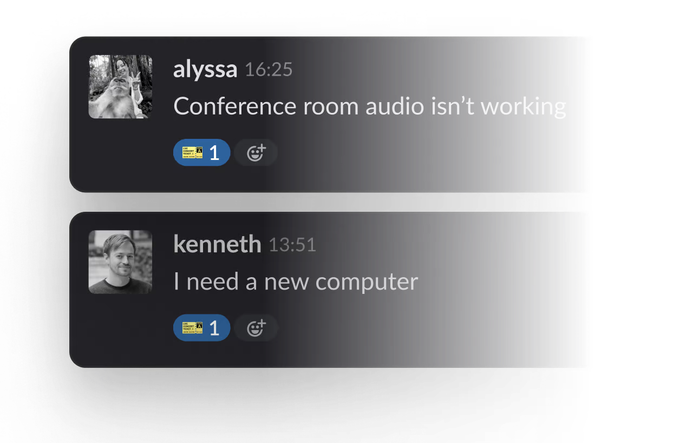
Add Linear Asks to shared Slack
channels to enable your most
important customers to file bug
reports and feature requests.
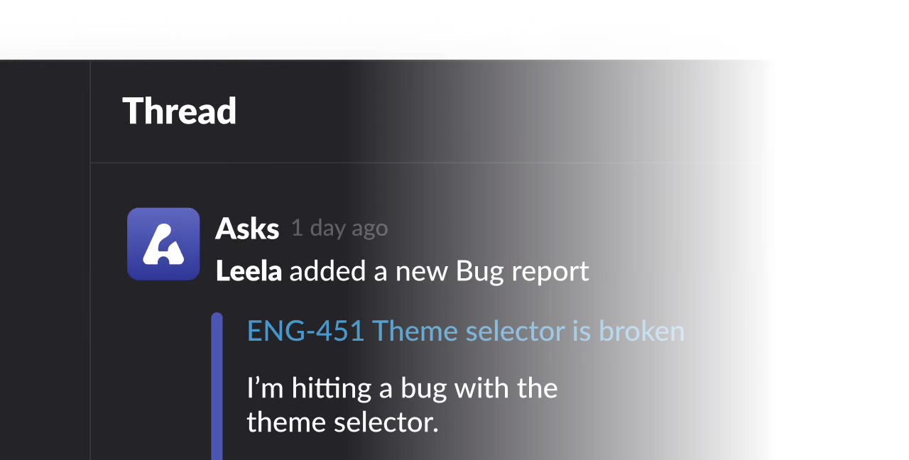
Manage requests and
questions to your Data
Science team more efficiently.
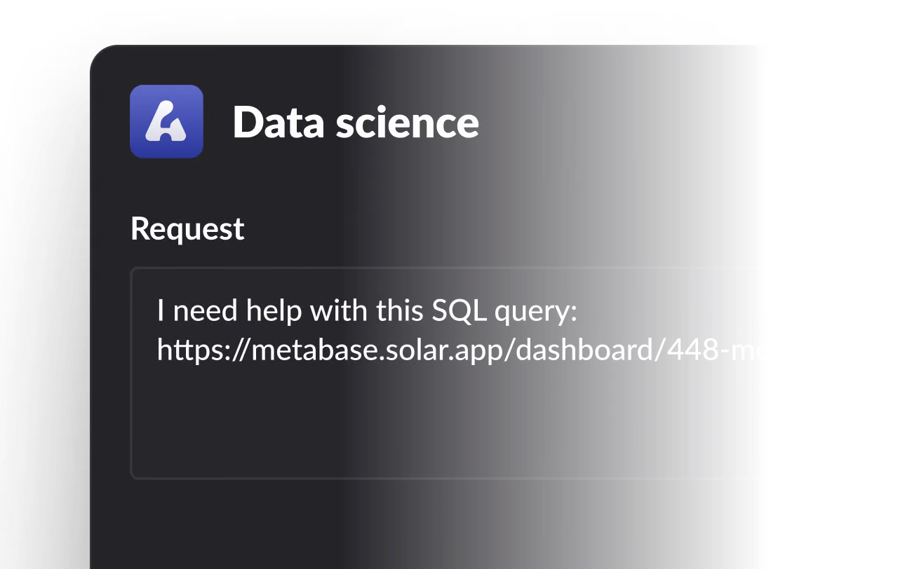
Create private Asks via DM for
sensitive requests that only you
and your HR team can access.
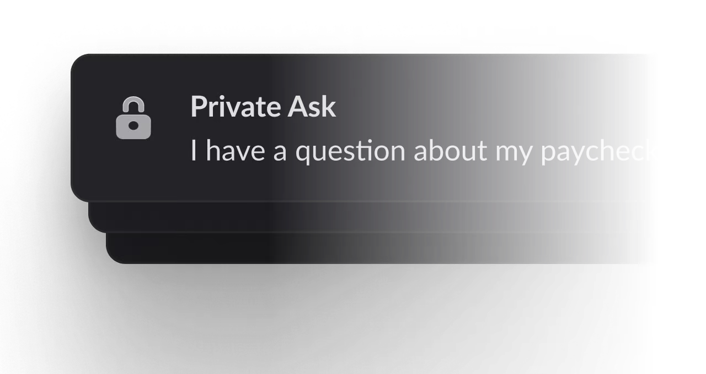
Linear Asks is available for Plus plan workspaces.
Get a 30 day free trial to see if Asks is right for you.
New Plus subscribers only.